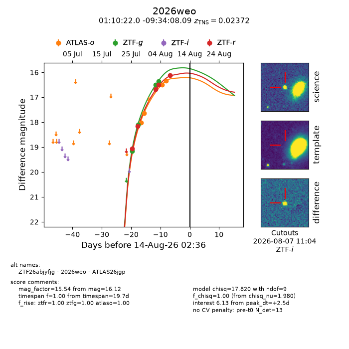
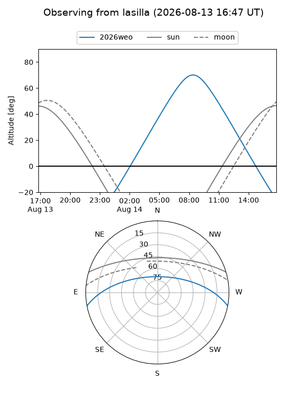
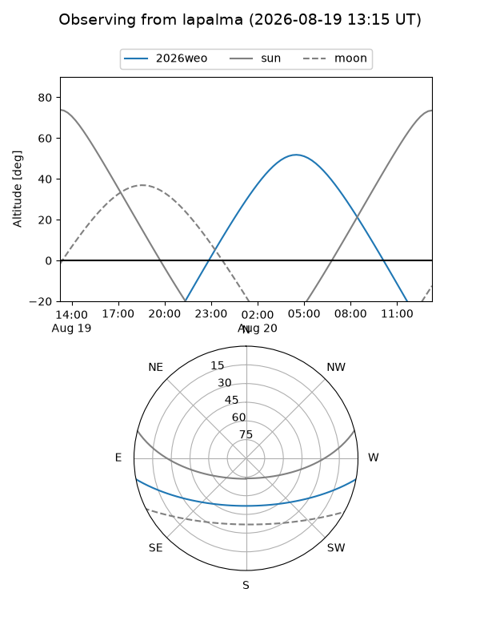
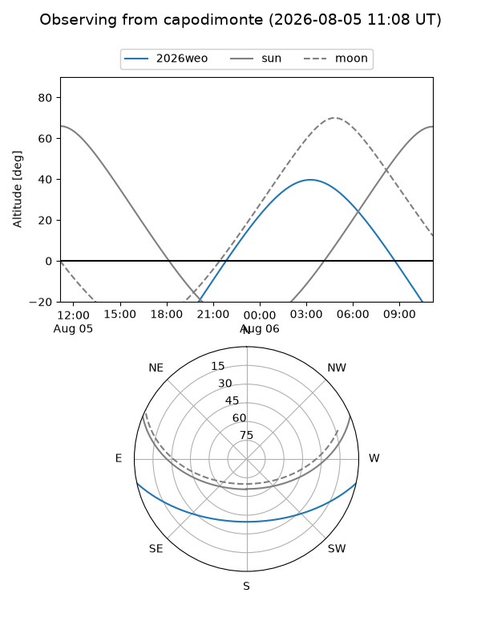
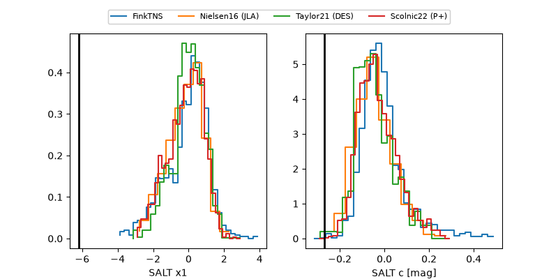

2026weo
Target 2026weo at 2026-08-14 02:39
Aliases and brokers:
FINK-ZTF: ztf.fink-portal.org/ZTF26abjyfjg
Lasair-ZTF: lasair-ztf.lsst.ac.uk/objects/ZTF26abjyfjg
ALeRCE-ZTF: alerce.online/object/ZTF26abjyfjg
YSE-PZ: ziggy.ucolick.org/yse/transient_detail/2026weo
TNS name: wis-tns.org/object/2026weo
Direct TNS query: direct search
alt names
ZTF26abjyfjg (ztf,fink_ztf)
2026weo (tns,yse)
ATLAS26jgp (atlas)
Coordinates:
equatorial (ra, dec) = 17.5917,-9.56891
equatorial (HMS+DMS) = 01:10:22.02,-09:34:08.09
galactic (l, b) = (138.0964,-71.88113)
Flags:
TNS type: SN Ia
TNS redshift: 0.0237
peak dt: +2.5
Photometry:
last atlaso=16.34, ztfg=16.35, ztfr=16.12
4 atlaso, 4 ztfg, 5 ztfr detections
Lightcurve

Visibility



Additional plots
